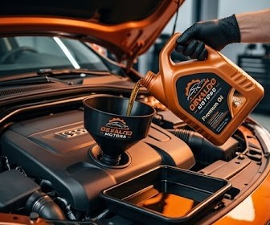
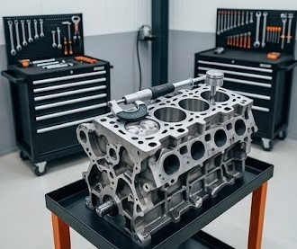
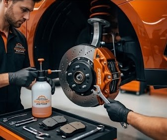
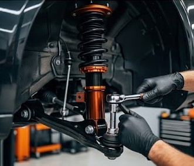
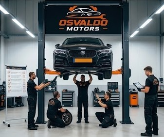

Troca de Óleo
Serviço de troca de óleo para manter o motor funcionando corretamente e aumentar sua durabilidade.

O sistema da Osvaldo Motors tem como objetivo facilitar a gestão de clientes, veículos e ordens de serviço, tornando o atendimento mais rápido e organizado, inclusive pelo celular no pátio da oficina.

Serviço de troca de óleo para manter o motor funcionando corretamente e aumentar sua durabilidade.
Manutenção e reparos para solucionar problemas e garantir o bom funcionamento do motor.

Serviço especializado para recuperação e manutenção de motores.

Revisão e manutenção do sistema de freios para garantir mais segurança ao dirigir.

Serviços de revisão e manutenção para melhorar a estabilidade e o conforto do veículo.

Avaliação dos principais componentes do veículo para identificar possíveis problemas e realizar as manutenções necessárias.
| Serviço / Procedimento | Preço |
|---|---|
| Troca de Óleo | R$ 180,00 |
| Manutenção de Freios | R$ 300,00 |
| Manutenção de Suspensão | R$ 450,00 |
| Revisão Completa | R$ 600,00 |